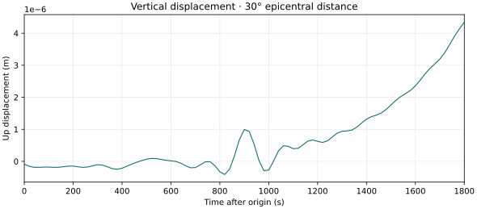

Get started
Compute a short vertical-displacement trace for one source and receiver, then inspect its samples and plot.
{{REVISION_NOTICE}}
Build yspec as described in the installation guide. From the repository root, make a fresh run directory and copy the checked tutorial input and model into it. Inputs and outputs resolve relative to the JSON file, so the calculation writes only inside this directory.
mkdir -p build/first-seismogram
cp docs/site/examples/first-seismogram.json build/first-seismogram/input.json
cp examples/prem.200 build/first-seismogram/prem.200Use a deliberate thread limit. The small band, degree range and single receiver make this a first run, not a precision benchmark.
cd build/first-seismogram
OMP_NUM_THREADS=2 ../guide/bin/yspec input.json
ls first-seismogram.out.*The program reports the model, degree/frequency ranges, sources, receivers and thread count on standard error, then writes the trace first-seismogram.out.1 and first-seismogram.out.receivers, a table giving, for each trace file, its source, the receiver's latitude, longitude and depth, and the epicentral distance, azimuth and back-azimuth.
Each row contains four whitespace-separated values: time after the origin in seconds, then vertical (up), north and east displacement in metres. This file has 91 samples from 0 to 1800 seconds at 20-second intervals. A nonzero vertical trace follows from the radial moment tensor and the receiver's 30-degree epicentral distance.
Download the exact input fixture and the illustrative SVG plot, and read the plot provenance record. The illustration was generated from this fixture run. To reproduce it from the repository root after the calculation, run:
python3 docs/site/examples/plot_first_seismogram.py \
build/first-seismogram/first-seismogram.out.1 \
build/first-seismogram/first-seismogram.svg
To check a scientific result, vary the maximum degree, upper frequency, record length and integration tolerance separately. The solver tolerance is local to each integration step and does not directly bound the final trace error.